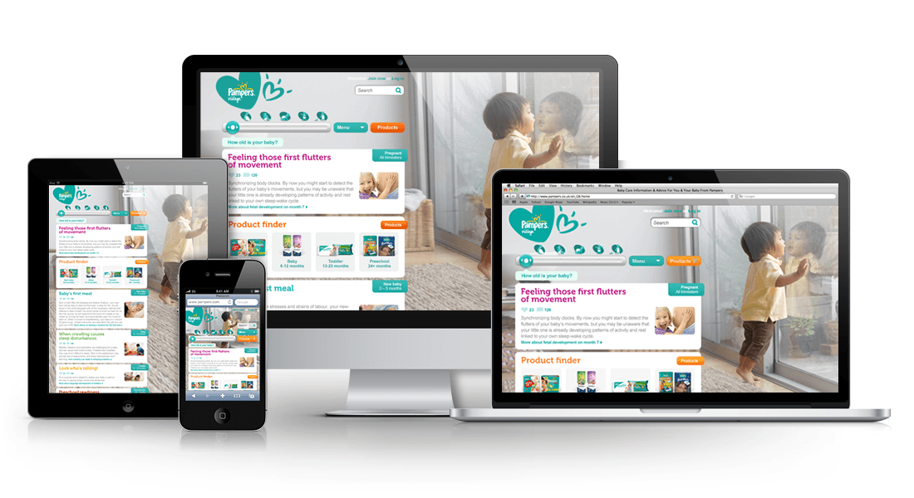
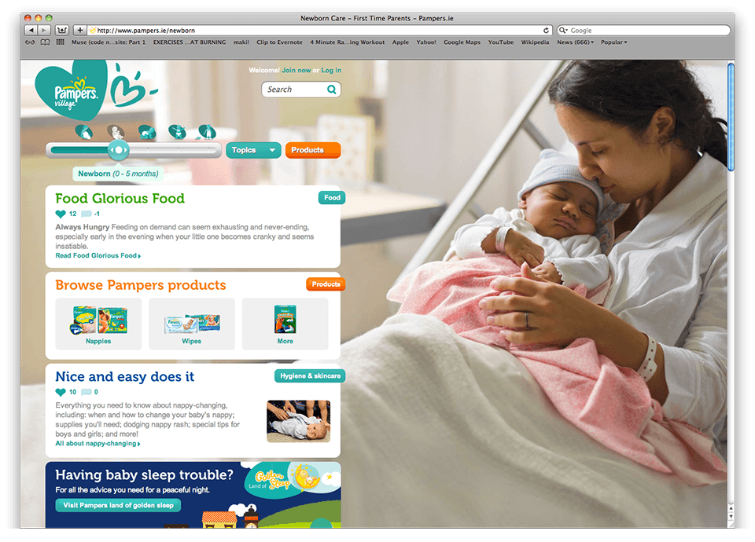
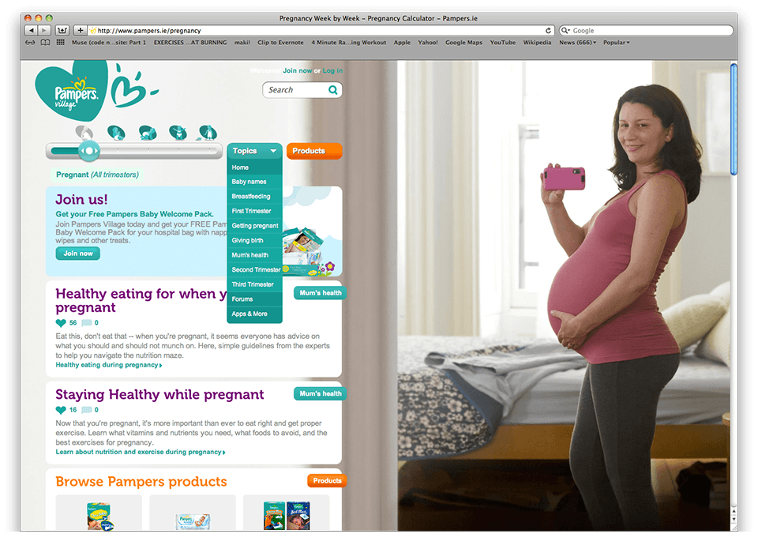
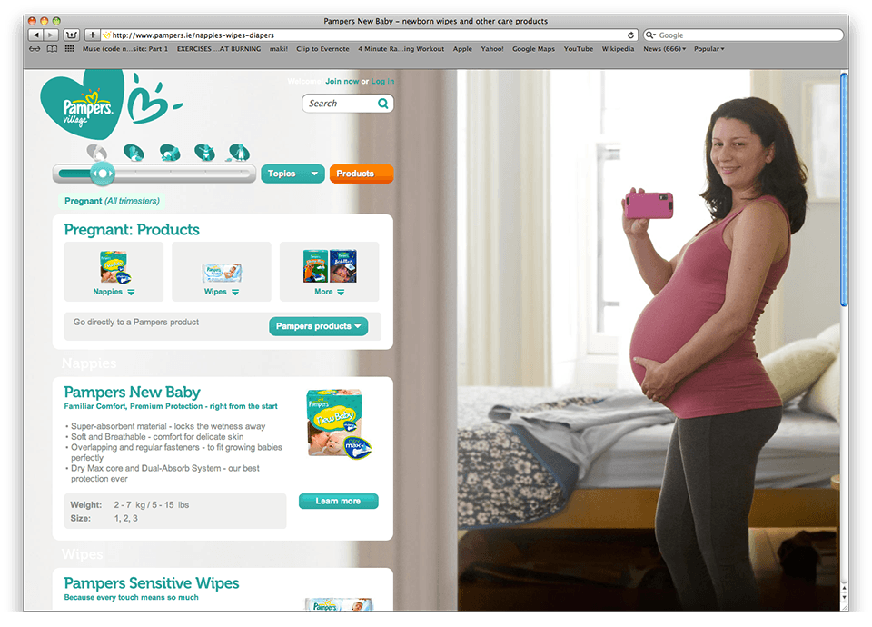
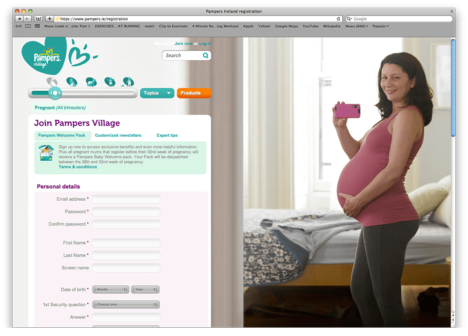
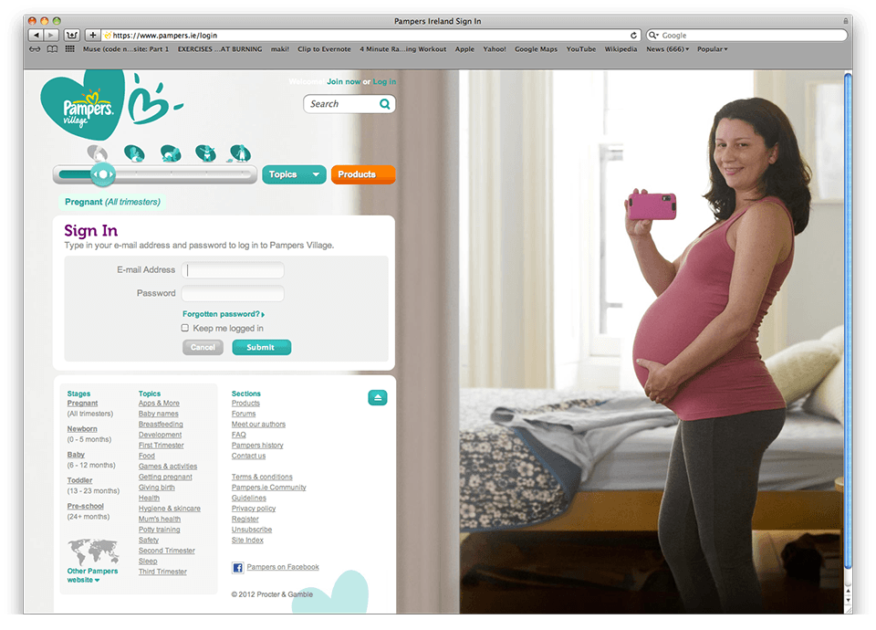
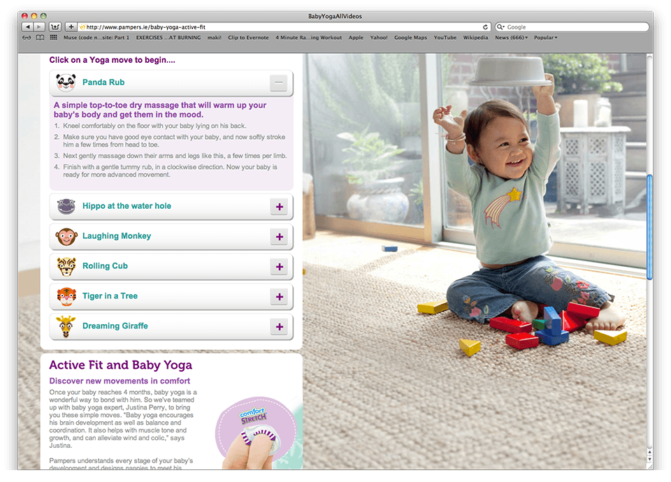

About the Project
In 2011 I worked at Strawberry Frog, together with the Art director and junior designer I designed the New Pampers Platform. Our focus was to highlight the insight Pampers has into the baby stages of development. The goel, to develop a genuine, easy to digest, filtered resource that parents can connect to anywhere - anyway they choose. The platform launched worldwide across 2012 and can be viewed via your chosen device.
The Web Site





Visit Website